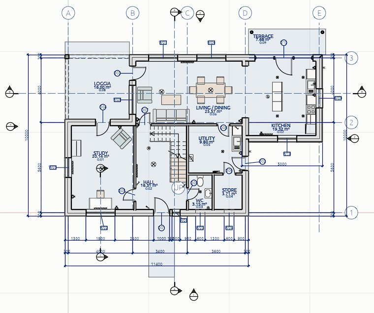

One model.Every drawing.
CreaBIM is a free BIM modeller for architects. Model your building in 3D, and its plans, sections, elevations, sheets, schedules, quantities and IFC follow on their own: always in step, on your own computer, with no subscription.
- No account, no licence fee
- Works fully offline
- IFC in and out
- Blender-style keys

One model. Every drawing.
A minute with CreaBIM 1.1: the model, your layout, selection and Edit mode, profiles, and the drawings that come from it.
- 0:00CreaBIM
- 0:04One model, every drawing
- 0:15Your layout, your theme
- 0:22Box, circle and lasso selection
- 0:30Edit mode
- 0:38Profiles
- 0:47Sheets, title blocks and schedules
- 1:00Free, open source, offline
- 1:10Download
- 640elementsin the starter house, footings to fixtures
- 13sheetsdrawn from one model, as vector PDF
- 3IFC schemasIFC2X3, IFC4 and IFC4X3 read
- 1modelbehind every view, sheet, schedule and export
Design in one tool. Document in another.
Most practices run two programs and a handover between them: a modeller for the design, a drafting or BIM tool for the permit set. Every revision crosses that boundary by hand, so the drawing you submit is only as current as the last time someone updated it.
- 01Concept massingdesign tool
- 02Design developmentdesign tool
- 03Redraw the plansCAD
- 04Rebuild in BIMauthoring
- 05Reconcile the seteach revision
Three of these five steps exist only because the model and the drawings live in different files.
- 3D view live
- Plan 1:50
- Section cut
- Elevation 1:100
- Sheet A0–A4
- IFC 4
- Schedule csv
- Take-off xlsx
One edit lands in all of them, in the same moment and the same undo step.
Small, fast, and quiet.
CreaBIM is written in Rust and draws on your graphics card. Sections and 3D drawings are built on every core in the background, so dragging a wall never waits for the other views.
- 16MBThe Windows installer
- 0.2sFrom double-click to a window
- 0.3%CPU when you leave it alone
- 16coresUsed to draw sections and 3D views
Measured with the starter house on a 16-core Windows desktop. Your numbers will vary with your machine and your model.
Drawn from the model, not traced over it.
Sections and elevations are generated from the model. Cut walls, slabs and openings are drawn heavy; what lies beyond is projected with hidden lines removed.
- Draw sections and elevations in a plan, or inside another section
- Level datums, section and elevation marks, door swings and window symbols
- Sheets with a title block, scales and live views, exported as vector PDF
- Shade any 3D view or elevation in material colours, on screen and on sheets
SVGPlan drawingsPDFSheetsCSVSchedules
XLSXSchedules and take-offIFCIFC4, and IFC5 (alpha)
GLBglTF for BlenderFCSTDFreeCAD document


Your own sections, drawn once.
Draw a coping, a gutter or a steel section in its own view, with snaps, guides and typed lengths, then use it for sweeps, columns, beams and railings. Change it later, and the elements made with it take the new shape when you apply it.
- Several shapes in one profile, with holes and voids you pick
- Trace over a picture, a DXF or a view of the project
- Move, rotate, align and copy, with box select
Modelled like Blender. Made for architects.
The dense, keyboard-first way of working modellers love, given to buildings instead of characters: areas you split and arrange, panels of tabs, a key for every move and a value typed when it must be exact. What you move are walls, slabs and sheets.
- GMove with the pointer
- RRotate
- SScale
- EExtrude a face or sketch
- ⇧ DDuplicate
- HHide the selection
- TabObject or Edit mode
- /Show the selection alone
- ⇧ AAdd
- ⌃ ZUndo, always
Blender is a trademark of the Blender Foundation. CreaBIM is independent and not affiliated with it.
Your work stays yours.
Offline, on your machine
No account, no cloud, no telemetry. Your projects are files on your disk.
Open files
An open, documented project format, IFC in and out, DXF references, glTF and FreeCAD exchange.
Open source, GPL-3.0
Read the code, build it yourself, report a bug or send a fix.
See it, learn it, try it.
Features
Modelling, drawings, sheets, schedules and exchange, with where each part stands today.
See the features →Tutorials
Build a first house in eight short steps, from an empty project to a printed sheet and an IFC file.
Start the tutorial →Download
CreaBIM 1.0.1 for Windows and Linux: an installer, a portable zip, or the source.
Get CreaBIM →Is it really free?
Yes. CreaBIM is open-source software under GPL-3.0: free to use, study, change and share.
Does it need the internet?
No. It runs on your computer and never needs a connection.
Can I use it on real projects?
Not yet for production work. It's ready to explore and to model with; check where it stands before you rely on it.
Does it open Revit or ArchiCAD files?
Through IFC: export IFC from those tools and open it in CreaBIM. Native .rvt files are a closed format.
Is there a Mac version?
Not yet. Windows and Linux come first.